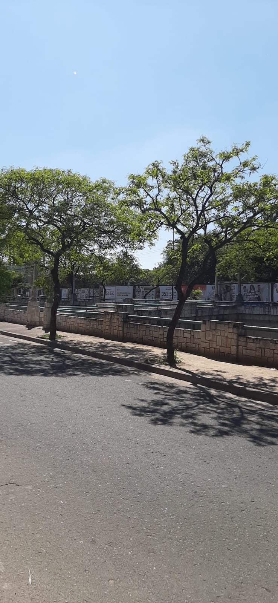
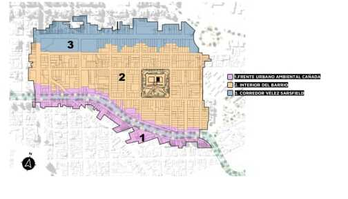
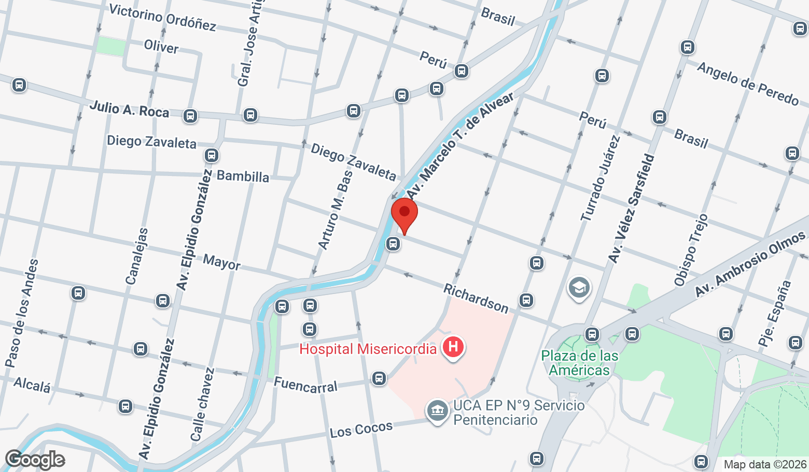
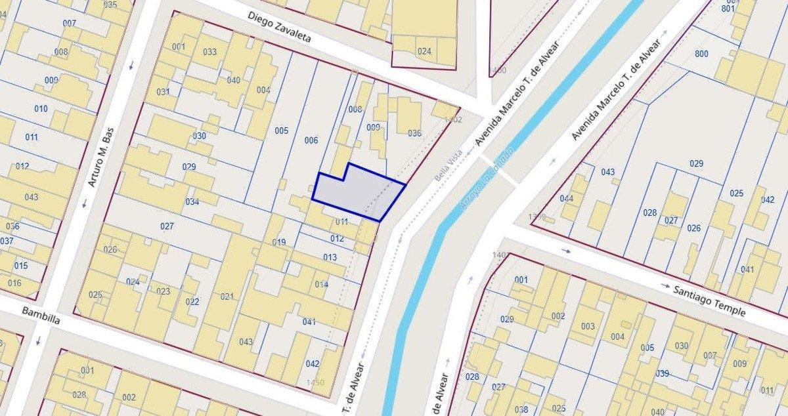

Tierra propia en uno de los corredores con más proyección de Córdoba
Lote ubicado en Güemes Sur, ciudad de Córdoba, sobre la calle Marcelo T. de Alvear 1422, a metros de La Cañada, el histórico arroyo con su arboleda y sus muros de piedra que atraviesa la ciudad.
Tiene 343 m² según catastro y cuenta con escritura. Está comprendido dentro del Polígono de Actuación Concertada (PAC) Güemes Sur, el plan de renovación urbana de la zona.
Y acá está lo más interesante: por estar dentro del PAC, es un lote con verdadero potencial de desarrollo. La nueva normativa habilita construir en altura, con edificios de hasta 38,5 m y un FOT de hasta 5,0 para quienes adhieran al plan. Ideal para proyectar un emprendimiento o una vivienda con vista a La Cañada.
Es una oportunidad poco habitual: suelo propio, con papeles en regla, en un sector consolidado y a la vez en plena transformación, a pasos de Nueva Córdoba, la Ciudad Universitaria y el centro.
- 343 m² según catastro
- Con escritura
- Apto para construir en altura
- Gran potencial de desarrollo
- Frente a La Cañada
- M. T. de Alvear 1422, Güemes Sur
- Dentro del PAC Güemes Sur
- A pasos de Nueva Córdoba y el centro
Los datos del lote

Vivir frente a La Cañada
La Cañada es uno de los paisajes más reconocibles de Córdoba: su arboleda, sus muros de piedra y su recorrido le dan al lote una vista verde y abierta poco común en la ciudad.
El plan de renovación urbana de la zona contempla la puesta en valor del corredor verde del arroyo, sumando espacio público a un sector ya consolidado y muy bien conectado.
El lote en video
Una recorrida para ver el terreno y su entorno antes de visitarlo.
Qué es el PAC Güemes Sur
El lote forma parte de un sector con un plan de renovación urbana aprobado por la Municipalidad de Córdoba que hoy habilita construir en altura. Esto es lo más relevante para entender su potencial de desarrollo.
- Sector incluido en el PAC Güemes Sur, plan municipal de renovación urbana aprobado por Ordenanza N° 13.557/25 (ciudad de Córdoba).
- Ahora se puede construir en altura: la normativa habilita edificios de hasta 38,5 m y un FOT de hasta 5,0 para quienes adhieran, una capacidad constructiva muy superior a la anterior.
- Polígono de aproximadamente 25 hectáreas, delimitado por Av. Pueyrredón, Av. Vélez Sarsfield, calle Richardson y Av. Marcelo T. de Alvear.
- Contempla la puesta en valor del corredor verde del Arroyo La Cañada y la mejora del espacio público y la movilidad.
- Excelente conectividad: a pasos de Nueva Córdoba, la Ciudad Universitaria y el centro.
- Proceso de planificación participativo, orientado a una densificación ordenada de un sector ya consolidado.

Información de carácter orientativo, basada en fuentes públicas y en el artículo enlazado. Se recomienda verificar la normativa y la documentación vigente antes de tomar una decisión.
Marcelo T. de Alvear 1422, Güemes Sur
Sobre La Cañada, entre Diego Zavaleta y Bambilla, en la ciudad de Córdoba.

Ubicación sobre La Cañada, próxima al Hospital Misericordia y la Plaza de las Américas.

Plano catastral de referencia del lote.
Imágenes del lote y su ubicación
Tocá cualquier imagen para verla en grande.
¿Querés ver el lote en persona?
Te paso toda la documentación y coordinamos una visita cuando te quede cómodo.